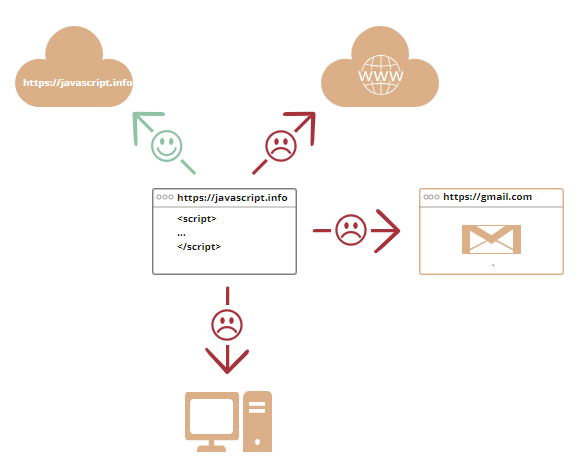

A témakör célja, hogy megismerkedjünk a JavaScript-tel. Néhány alapvető fogalommal tisztában legyünk. És felfedezzünk néhány olyan internetes felületet, amelyek a későbbiekben nagyon hasznosak lehetnek a számunkra.
Brendan Eich tervezte meg 1995-ben.
Minden modern böngészőben alapból telepítve és aktiválva van. Nem kell semmit letölteni!
Teljes integráció a HTML-lel és CSS-sel!
A JavaScript a web programozási nyelve. Az ezen a nyelven írt programokat script-eknek hívjuk.
A kódok sima szövegek (plain text), így bármely egyszerű szövegszerkesztőben megírhatók, majd a böngészőben futtathatóak. Nem igényel külön előkészületeket vagy fordítást (mint például a Java, nincs bytekód).
A kezdetekben a neve LiveScript volt. ECMA szabvány 1997-től. A mai hivatalos neve: ECMAScript.
Most csak a böngészőbeli JavaScript-tel fogunk foglalkozni, de bármely eszközön futtatható, amely rendelkezik egy JavaScript Motor-nak (JavaScript Engine) nevezett szoftverrel (néha helytelenül JavaScript Virtual Machine-nek is hívják):
Néhány hasznos oldal:
Amire képes:
clear_all HTML és CSS tartalom hozzáadás, törlés és módosítás.
clear_all A weboldalon történő események kezelése (billentyűkattintás, egérműveletek stb.).
clear_all Távoli szerverek elérése interneten keresztül.
clear_all Cookie-k kezelése.
clear_all Kommunikáció a felhasználóval. Üzenetek megjelenítése, információkérés stb.
clear_all Böngészőbeli adattárolás (local-storage).
Amire nem:
clear_all Nem képes hozzáférni az alacsonyszintű memóriához és a CPU-hoz. Nem tud file-okba írni, onnan olvasni közvetlenül, csak bizonyos műveletek (drag-and-drop, "input" címke használata stb.) megtétele után. Védelmi intézkedés!
clear_all Nem képes hozzáférni a perifériákhoz (kamera, mikrofon stb.) csak a felhasználó explicit engedélye után (pop-up ablak felugrása). Védelmi intézkedés!
clear_all A böngészőben megnyitott oldalak nem látják egymást, még akkor sem ha az egyikből nyitjuk meg a másikat a JavaScript segítségével, csak ha ugyanabból a "domain"-ből származnak, ugyanarról a "protocol"-ról, "port"-ról jönnek (Same Origin Policy). Védelmi intézkedés!
clear_all Interneten keresztül egy másik szerverhez való hozzáférés. A másik fél explicit beleegyezése kell. Védelmi intézkedés!

A JavaScript a böngésző alapértelmezett scriptnyelve, de a különböző igények kielégítése miatt számos új nyelv született, amely bizonyos szolgáltatásokkal, nyelvi elemekkel bővítette a JavaScript-et. Ezek a nyelvek "kétszeres fordításon" transzpiláláson (transpilation) esnek át, hogy futni tudjanak a böngészőben (először "lefordulnak" JavaScript-re):